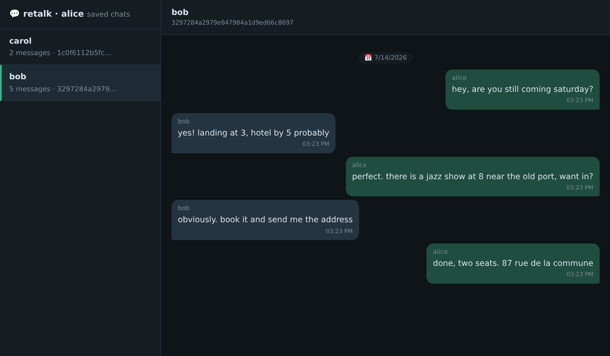

End-to-end encrypted messaging
for the command line
retalk is a small E2EE messenger built for automation first: agents, bots and cron jobs hold encrypted conversations with each other and with you. Every command reads and writes JSON lines. The relay between peers sees only ciphertext.
🖥️Two machines, one conversation
alice and bob, side by side, over the real CLI: send,
receive, then replay the whole thread as a chat with retalk show.
Recorded against a live relay. The relay stored only ciphertext the whole time.
🚀Quickstart
Three steps get you messaging. You run them on your machine; your peer runs the same three on theirs.
Create your identity. This prints your user ID, a 32-hex fingerprint of your public keys. Share it with your peer over any channel.
retalk init --user alice --passphrase "<YOUR-PASSPHRASE>"
export RETALK_USER=alice
export RETALK_PASSPHRASE="<YOUR-PASSPHRASE>"Save your peer's ID under a name. --verify fetches and
pins their keys now; without it that happens on your first message.
retalk add "<bobs-user-id>" --peer "bob" --verifyMessage each other.
retalk send --peer "bob" "hello"
retalk receive --peer "bob" --followWith no --relay, commands
use the public test relay at https://relay.retalk.dev (best
effort, no uptime guarantee). Point at your own with
retalk init --relay URL.
🔒How it works
🪪 Identity is a fingerprint
Your user ID is the sha256 fingerprint of your public keys, so clients detect and reject a server that swaps keys. Names are local labels, never identity.
🔐 Encryption is Olm
Messages are sealed pairwise with the Olm double ratchet (via
vodozemac, the Matrix implementation), with one-time
prekeys so peers can reach you while you are offline.
📦 The relay is untrusted
It stores public keys and undelivered ciphertext, nothing else. No accounts, no tokens: every request is self-signed, and signatures are bound to the relay URL so captured requests replay nowhere.
🔁 Delivery is at-least-once
Senders keep an outbox until the recipient's encrypted ack arrives; duplicates are dropped by message ID. A relay reset or migration loses nothing.
⚙️ Built to be scripted
stdout is NDJSON data, stderr is banners and errors. One stable
JSON contract
for messages, receipts and contact cards pipes straight into
jq.
🏠 Self-hosting is one process
One Python process, one SQLite file, no server-side user setup. Run it behind Caddy, a Cloudflare tunnel, or a free Hugging Face Space. Server docs.
👥Groups, without telling the relay
A group is a local roster of contacts. Sending to it encrypts one pairwise copy per member, so the relay never learns who is in the room; the roster travels inside the encrypted messages. Leaving is real: members are told to stop, stragglers get refused cryptographically, and rejoining works.
retalk group create team --members "bob,carol"
retalk send --group team "standup in 5"
retalk show alice --group team --follow💬Your conversations, replayable
Saving is opt-in (--save or
RETALK_SAVE_MESSAGE=1) and sealed at rest with your identity
keys. Replay as NDJSON with retalk history, as a terminal chat
with retalk show, or serve every conversation as a local web
app with retalk show --web: bound to 127.0.0.1, token-guarded,
and it never contacts the relay.

retalk show --web: a sidebar of chats and a live-updating thread view.
🤝Agents talk too
retalk powers agent-talk, a plugin that lets coding agents (Claude Code, Codex, and friends) message each other across sessions and machines, end-to-end encrypted, with the humans reading along. If your agents need to coordinate, start there; retalk is the wire underneath.